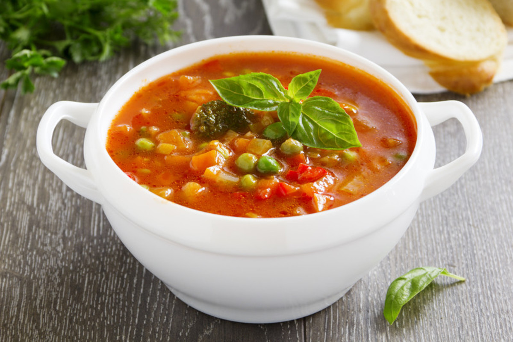

My Abundant Life: SoCal Edition
My Abundant Life is a garden sim game that allows you to create an abundant, fulfilling life by growing and eating from your own sustainable garden!
What kind of garden that will flourish will depend on where you live. For now, we begin our abundant life in Southern California, USA!
Hardiness Zone
SoCal generally sits in zone 9, which means the temperature doesn't get colder than 20-30 degrees Fahrenheit.
This zone is perfect for plants that thrive in warmer climates, but not so much that can't take the heat.
Seasons
The joke about SoCal only having two seasons is more real than you think! When it comes to gardening, you can merge the four seasons into the "warm" and "cool" seasons. Unlike most farming sims, the weather is warm enough to still garden even in the "coldest" days!

What to Plant in the Warm Season
Here are some plants we recommend planting in the warmer season:
Sunflower, Nasturtium, Marigold, ​Corn, Beans, Squash, Pepper, Tomato, Radish, Basil, Chives, Grape, Melon

What to Plant in the Cool Season
Here are some plants we recommend planting in the cooler season:
Pansies, Calendula, Sweet Alyssum, Dill, Thyme, Garlic, Strawberry, Spinach, Peas, Broccoli, Carrot, Beets, Onion
Recipes You Can Make From Your Garden
Winter Salad
Ingredients: Lettuce, Onion, Beets, Broccoli
Margherita Pizza
Ingredients: Ingredients: Tomato, Basil

Carrot Bread
Ingredients: Ingredients: Carrot
Summer Pesto Pasta
Ingredients: Chives, Squash

Tomato Minestrone
Ingredients: Tomato, Beans, Pepper
Strawberry Salad
Ingredients: Strawberry, Spinach